КОМПЛЕКС ПЕРСПЕКТИВНОГО
РАЗВИТИЯ
г. МОСКВЫ
УПРАВЛЕНИЕ РАЗВИТИЯ
ГЕНПЛАНА
г. МОСКВЫ
МОССТРОЙЛИЦЕНЗИЯ
ВЕДОМСТВЕННЫЕ
СТРОИТЕЛЬНЫЕ НОРМЫ
ПО ТЕПЛОТЕХНИЧЕСКИМ
ОБСЛЕДОВАНИЯМ НАРУЖНЫХ
ОГРАЖДАЮЩИХ КОНСТРУКЦИЙ
ЗДАНИЙ С ПРИМЕНЕНИЕМ
МАЛОГАБАРИТНЫХ ТЕПЛОВИЗОРОВ
ВСН 43-96
Москва - 1996
СОДЕРЖАНИЕ
|
2. Методика обследований. аппаратура, приборы и основные требования к ним.. 2 3. Условия проведения обследований с тепловизором.. 4 5. Обработка результатов обследования. 6 |
Ведомственные строительные нормы по организации и проведению теплотехнических обследований наружных ограждающих конструкций зданий с применением малогабаритных тепловизоров разработаны НИИМосстроем Департамента строительства (к.т.н. Е.Т. Артыкпаев, к.т.н. Ф.С. Белавин) с участием Мосстройлицензии (Ю.И. Столяров, к.т.н. В.Д. Фельдман).
Нормы разработаны впервые на основании научных исследований и обобщения опыта работ, проводимых лабораторией строительной физики НИИМосстроя с 1976 г. по теплотехническим обследованиям жилых и общественных зданий с применением малогабаритных тепловизоров. Учтен также опыт, накопленный МНИИТЭПом по многочисленным расчетам и обследованиям московских типовых жилых зданий.
Нормы предназначены для использования в организациях, занимающихся теплотехническими испытаниями наружных ограждающих конструкций жилых и общественных зданий.
Нормы следует также рассматривать как дополнение и расширение действующих стандартов и руководств в части теплотехнических испытаний строительных материалов и конструкций.
ВСН согласованы с МНИИИТЭП, Техническим управлением АО «Главмосстрой», Московским Агентством по энергосбережению и Инспекцией Госархстройнадзора.
|
Комплекс перспективного развития г. Москвы |
Ведомственные строительные нормы по теплотехническим обследованиям наружных ограждающих конструкций зданий с применением малогабаритных тепловизоров |
ВСН-43-96 КПР |
|
Управление развития генплана г. Москвы |
Вводятся впервые |
1.1. Настоящие ведомственные нормы распространяются на проверку теплозащитных качеств наружных ограждающих конструкций и их стыков в эксплуатируемых зданиях жилого, общественного или промышленного назначения.
1.2. Данные нормы содержат основной регламент теплотехнических обследований с применением малогабаритных тепловизоров и методику комплексной проверки теплозащитных качеств и определения основного показателя - сопротивления теплопередаче наружных ограждающих конструкций и их стыков.
1.3. Проверку и контроль осуществляют в натурных условиях в зимний или осенне-весенний период при разности между температурами внутреннего и наружного воздуха не менее чем 10 °С.
1.4. Теплотехнические обследования и контроль с тепловизором проводят по требованию строительной или эксплуатирующей организации. Необходимость выполнения выборочного тепловизионного контроля определяется также требованиями нормативных документов.
|
Внесены НИИМосстроем |
Утверждены Управлением развития генплана г. Москвы 1 июля 1996 г. |
Срок введения в действие 1 октября 1996 г. |
1.5. Результаты теплотехнических обследований с применением малогабаритных тепловизоров, осуществляемых по настоящим нормам, входят в систему контроля качества производства работ подрядной организации и контроля качества продукции предприятия-изготовителя, выпускающего наружные ограждающие конструкции. При необходимости эти данные представляются в Агентство по энергосбережению, Инспекцию Госархстройнадзора и учитываются при лицензировании строительных организаций и предприятий-изготовителей.
2.1. Методика обследований является многоцелевой, она предусматривает осуществление контроля основных теплотехнических параметров на стадии эксплуатации ограждающих конструкций, используя при этом только неразрушающие и расчетные способы исследования.
Методика дает возможность:
- оперативно в течение нескольких часов провести разовые натурные обследования объекта, что исключает длительные (до 2-х месяцев зимнего времени) натурные наблюдения с установкой в конструкцию различных датчиков с последующей обработкой их показаний;
- организовать при необходимости периодической или систематический контроль качества наружных ограждающих конструкций в эксплуатируемых условиях;
- изменить решения по теплозащите и воздухопроницаемости запроектированных стыков и дать рекомендации по замене или дополнительному применению теплоизоляционных и теплопроводных материалов при плановом, аварийном ремонте или при жалобах лиц (организации), эксплуатирующих здание (сооружение).
2.2. При обработке результатов обследований проводят анализ проектно-конструкторских решений, выявляют соответствие основных теплотехнических показателей узлов конструкции нормативным требованиям. При необходимости или отсутствии данных проводят дополнительный теплотехнический расчет и испытания по методикам НИИМосстроя, МНИИТЭП или других организаций, а также по стандартам и руководствам, перечень которых дан в приложении № 1.
2.3. При теплотехнических обследованиях наружных стен с тепловизором осуществляют:
- исследование температурно-влажностного и воздушного режима помещений здания;
- измерение температур и термографирование заранее определенных участков наружной и внутренней поверхностей стены;
- расшифровку термограмм, полученных с помощью тепловизора, и в представлении их в виде изотерм, т.е. линии одинаковых радиационных температур поверхностей;
- выявление возможных теплотехнических неоднородностей стеновой панели, заполнений стыков и оконных блоков (остекления оконных и дверных блоков допускается только обследовать тепловизорами, работающими в диапазоне электромагнитных волн свыше 7 микрон);
- расчета максимальных, минимальных и средних температур отдельных участков внутренней и наружной поверхностей ограждающей конструкции и на основании их коэффициентов теплотехнической однородности (при необходимости), локальных или приведенных сопротивлений теплопередаче.
Первые два этапа составляют суть теплотехнических обследований, проводимых в натурных условиях, а последние три осуществляют исключительно на персональном компьютере IBM PC/AT по специальной программе в лабораторных условиях одновременно с работами по п. 2.2.
2.4. В качестве малогабаритного тепловизора используются тепловизионные камеры с безазотным охлаждением и возможностью записи термоизображений, получаемых тепловизионными камерами, на стандартную видеокассету.
Наилучшим образом этим требованиям отвечают тепловизионные камеры на основе пироэлектрического видикона (подробные характеристики образца даны в приложении № 2).
2.5. В качестве записывающего устройства используется любой переносной видеомагнитофон со стандартной видеокассетой.
2.6. Измерение температур поверхностей и воздуха у реперных участков производят цифровым термометром с точностью 0,1°. Там, где невозможно произвести контактное измерение температур поверхности, используют дистанционный инфракрасный термометр (термопоинт).
Перед проведением измерений показания всех термометров должны быть сверены друг с другом.
2.7. Определение скоростей воздушного потока у поверхностей стен (для расчетов фактических величин коэффициентов теплообмена) производят термоанемометром с точностью измерения 0,1 м/сек.
2.8. Стационарная часть - обрабатывающий центр, состоит из комплекта IBM PC/AT, принтеров, пакета прикладных программ. функция центра заключается в расшифровке термоизображений и цифровой покадровой обработке информации, содержащейся на магнитной ленте, построении изотерм и температурных полей, в т.ч. определения минимальных, максимальных и средних температур, а также сопротивлений теплопередаче.
В функцию центра входит также подготовка заключения по результатам обследований с рекомендациями по устранению причин "промерзаний" и улучшению эксплуатационного состояния наружных стен и помещений здания.
2.9. Остальные приборы и инструменты (см. приложение № 2), используемые дополнительно к перечисленным, должны быть тарированы и отвечать требованиям ГОСТов и соответствующих инструкций по эксплуатации.
3.1. Обследования во вновь построенных домах.
3.1.1. Зимние натурные теплотехнические обследования проводят преимущественно в головных образцах домов в период до заселения помещений, но при полном отогреве здания и устойчивой работе системы отопления за достаточно длительный период.
3.1.2. Обследования проводят по возможности в угловом незаселенном помещении на первом или в крайнем случае на втором этаже.
3.1.3. Объектом испытаний являются наружные стеновые панели и их стыковые соединения, оконные откосы, ориентированные на С, СВ или СЗ, а также горизонтальные стыки наружных панелей и панелей перекрытий полов первых этажей с техподпольями или другими неотапливаемыми помещениями.
3.1.4. Обследования проводят при изменении среднесуточных температур наружного воздуха, близком к стационарному режиму теплопередачи в холодный период года. Отклонение фактического режима теплопередачи от стационарного оценивают по справочному приложению № 2 ГОСТ 26629-85.
3.1.5. Натурные тепловизионные обследования проводят по возможности при отсутствии атмосферных осадков, тумана и задымленности. Обследуемые поверхности должны быть очищены от грязи, плесени, наледи, снега и других налетов, несвойственных материалам исследуемых конструкций.
3.1.6. Обследуемые наружные поверхности не должны подвергаться в процессе измерений длительному воздействию прямого и отраженного солнечного облучения. При термографировании и измерении температур внутренней поверхности должны быть исключены влияния вблизи расположенных действующих отопительных приборов путем их экранирования алюминиевой фольгой или другими теплоотражающими материалами.
3.1.7. Перед изменениями внутреннюю поверхность обследуемой стены условно разбивают на одинаковые квадраты с известной стороной таким образом, чтобы их видеоизображения целиком располагались на экране видеомонитора с данного фиксированного расстояния. Разбивку следует производить с захватом в одном кадре областей вертикальных, горизонтальных стыков, откосов оконного проема и предполагаемых зон теплопроводных включений.
3.1.8. На каждом квадрате исследуемой поверхности оператором выбираются по две реперные точки, температуры в которых должны быть измерены контактным или дистанционным способом. Контуры реперных участков должны быть зафиксированы на исследуемой поверхности стены и на кадре термоизображения, а температуры должны быть достоверно измерены и занесены в журнал наблюдений.
Кроме того на обследуемой поверхности участков по возможности выбирают геометрический репер, которым могут служить линейные размеры вертикальных и горизонтальных стыков, размеры простенков, оконных откосов и др.
3.1.9. Подготовку наружной поверхности к тепловизионным обследованиям проводят также, как внутренней; при разбивке на квадраты нужно по возможности обращать внимание на их соответствие внутренней разбивке, к захвату в обзорное поле тепловизора областей с горизонтальными и вертикальными стыками панелей верхних и нижних этажей.
3.2. Обследования в жилых и общественных зданиях, эксплуатируемых длительное время.
3.2.1. Натурные обследования состояния наружных стен и условий пребывания людей в жилых и общественных помещениях проводят по жалобам или по заказам организаций в случае резких нарушений температурно-влажностного режима наружных ограждающих конструкций и помещений. Обследования, как правило, проводят в заселенных квартирах и помещениях и, следовательно, подготовка и проведение испытаний проходят в ограниченных условиях.
3.2.2. Объектом испытаний являются элементы наружных стен (стыки, оконные откосы и др.), имеющие неблагоприятное состояние (отсыревания, появление плесени, наледи и др.) вследствие повышенной воздухопроницаемости стыков, недостаточной их теплоизоляции или других причин. Одновременно при необходимости исследуется влажностное состояние материалов стен путем непосредственных измерений или отбора проб материалов.
Исследуются режимы воздухообмена, вентиляции, отопления помещений и другие вопросы, касающиеся эксплуатации здания в целом.
3.2.3. Натурные тепловизионные обследования проводят при отрицательных температурах наружного воздуха, при отсутствии солнечного облучения, атмосферных осадков, тумана и других подобных явлений. В данном случае это особенно важно, так как наружные тепловизионные съемки приходится иногда проводить под углом и с достаточно большого расстояния (верхние этажи многоэтажных зданий).
3.2.4. Подготовку наружных и внутренних поверхностей стен для тепловизионных обследований проводят также, как и в п.п. 3.1.7., 3.1.8. и 3.1.9. При этом основное внимание должно быть направлено на места отсыревания, протечек и образования плесени. В частности, перед обследованием эти места должны быть очищены от плесени, старые обои удалены и стены освобождены от посторонних предметов.
4.1. Перед началом обследований аспирационным психрометром Ассмана измеряют температуру и относительную влажность воздуха в центре помещения и на расстоянии около 10 см от поверхностей участков наружных стен, а также температуру и относительную влажность наружного воздуха.
4.2. Перед измерениями производят настройку тепловизора, контактного и дистанционного термометров термоанемометров, в блок видеозаписи устанавливается видеокассета с отметкой счетчика кадров.
4.3. Измерения начинают с фиксации температур заранее намеченных точек поверхности, одновременно фиксируют температуры воздуха на расстоянии 5 - 6 см от тех же точек. Измеряют так же термоанемометром скорость движения воздуха (м/с) в нескольких местах по высоте стены как с внутренней, так и, по возможности, с наружной стороны.
4.4. Термографирование проводят последовательно по намеченным участкам с покадровой записью термограмм на видеокассету и одновременным измерением и фиксацией в блоке видеозаписи температур реперных участков.
4.5. Термографирование поверхности стены по возможности производят в перпендикулярном направлении к стене. Возможные отклонения от этого направления влево, вправо, вверх и вниз не должны превышать 30°. Измерения должны производиться с фиксированного расстояния, обычно оптимальное расстояние до стены составляет от 2 до 6 м. При перемещении оператора вдоль объекта и целях корректности последующих расчетов фиксированное расстояние желательно сохранять.
4.6. Термографирование наружной поверхности стен первых этажей здания проводится аналогичным образом, а стен верхних этажей, если невозможен близкий подход к ним из балконов, лоджий или из соседних близко стоящих сооружений, можно ограничить общим панорамным снимком, охватывающим всю стену с вертикальными и горизонтальными стыками.
4.7. После окончания термографирования необходимо провести визуальный осмотр состояния теплоизоляции и воздухопроницаемости стыков, вентиляции и отопления помещений и др. При необходимости следует определить (влажность по массе материалов стен и стыков с нарушенными теплозащитными свойствами. Измеряются и определяются и другие параметры, необходимые для специальных расчетов.
4.8. Результаты термографирования и визуально-инструментальных наблюдений заносят в журнал наблюдений по установленной форме.
Завершающим этапом обследования является проверка качества и количества информации, записанной на магнитную ленту видеокассеты, что осуществляют повторным просмотром ее через тепловизионную камеру.
5.1. Обработка результатов обследования в основном сводится к расшифровке термоизображений и получения качественных термограмм.
Осуществляется это следующим образом.
Из непрерывно записанной на магнитную ленту информации отбираются нужные кадры, по которым проводится расшифровка и представление термограмм в виде совокупности изотерм, т.е. совокупности линий одинаковых температур поверхности. На термограмме выбираются точки и участки поверхности, по которым определяются температуры и вычисляются их средние значения.
Полученная термограмма и ее численные характеристики в специальной форме выдаются на печатающее устройство ПК. Примеры представления данных показаны в приложении № 3.
5.2. По показаниям анемометра определяют подвижность (скорость движения) воздуха в м/с, в заранее определенных местах у наружной и внутренней поверхностей. По измеренным температурам воздуха в этих же местах расчетным способом или по специальным таблицам (см. приложение № 4) определяют фактические значения коэффициентов теплообмена и тем самым сопротивлений теплопереходу: Rв и Rн (м2×°С)/Вт.
При сопоставлении полученных данных с нормативными, требуемыми или проектными величинами сопротивлений теплопередаче можно ограничиться нормируемыми значениями коэффициентов теплообмена и, следовательно, значениям сопротивлений теплопереходу:
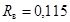 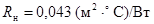
5.3. Расчет фактических сопротивлений теплопередаче проводят по одной из следующих формул:
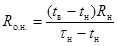 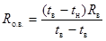
где tв, tн – измеренные температуры внутреннего и наружного воздуха, °С;
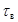 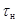
Rв, Rн – сопротивление теплопереходу, (м2×°С)/Вт.
Точность величин фактических сопротивлений теплопередаче определяется точностью и достоверностью первоначально измеренных температур и скоростей воздушных потоков у поверхностей конструкций.
5.4. По данным измерений психрометром определяют относительную влажность воздуха в помещениях, температуры «точки росы», рассчитывают требуемое сопротивление теплопередаче и другие параметры. Все расчеты и анализ проводят в соответствии с требованиями СНиП II-3-79** и МГСН-94 (см. приложение № 1).
6.1. Изменения температур наружной поверхности ограждающих конструкций на этажах выше первого проводят с лоджии и балконов с соблюдением требований безопасности при работе на высоте, СНиП III-4-80.
6.2. Тепловизор безопасен в эксплуатации: собственных излучений, вредных для окружающих людей, не имеет.
ПЕРЕЧЕНЬ
стандартов и руководств по определению
теплотехнических показателей материалов и конструкций
ГОСТ 22024-76 Бетоны. Метод измерения теплопроводности цилиндрическим зондом.
ГОСТ 23250-78 Материалы строительные. Метод определения удельной теплоемкости
ГОСТ 17177.3-81 Материалы и изделия строительные теплоизоляционные. Методы определения плотности
ГОСТ 17177.4-81 Материалы и изделия строительные теплоизоляционные. Метод определения влажности
ГОСТ 24816-81 Материалы строительные. Метод определения сорбционной влажности.
ГОСТ 25380-82 Здания и сооружения. Метод измерения плотности тепловых потоков, проходящих через ограждающие конструкции
ГОСТ 25891-83 Здания и сооружения. Методы определения сопротивления воздухопроницанию ограждающих конструкций
ГОСТ 25609-83 Материалы полимерные рулонные и плиточные для полов. Метод определения показателя теплоусвоения
ГОСТ 25898-83 Материалы и изделия строительные. Методы определения сопротивления паропроницанию
ГОСТ 21718-84 Материалы строительные. Диэлькометрический метод измерения влажности.
ГОСТ 26254-84 Здания и сооружения. Метод определения сопротивления теплопередаче ограждающих конструкций
ГОСТ 26602-85 Окна. Метод определения сопротивления теплопередаче
ГОСТ 26629-85 Здания и сооружения. Метод тепловизионного контроля качества теплоизоляции ограждающих конструкций
ГОСТ 7076-87 Материалы строительные. Метод определения теплопроводности
ИСО 6781-85 Международный стандарт
СНиП II-3-79** Строительная теплотехника. Изменения № 3 от 11 августа 1995 г. № 18-81
МГСН 2.01-94 Нормативы по теплозащите и тепловодоэлектросбережению. Утверждены Постановлением Правительства Москвы № 217 от 22 марта 1994 г.
ПЕРЕЧЕНЬ
аппаратуры и приборов, рекомендуемых для натурных
теплотехнических обследований наружных ограждающих
конструкций зданий
АППАРАТУРА, ИСПОЛЬЗУЕМАЯ НЕПОСРЕДСТВЕННО НА ОБЪЕКТЕ
1. Малогабаритный тепловизор общего назначения с безазотным охлаждением «Видеотерм-91» (США) на основе пировидикона:
- масса камеры 3 кг;
- диапазон измеряемых температур от -30° до +1100 °С;
- диапазон температуры окружающей среды при работе от -10 °С до +45 °С
- полоса спектра электромагнитных волн от 8 до 14 микрон;
- тепловая разрешающая способность 0,15 °С;
- круговое поле зрения 18 градусов при линзе с фокусным расстоянием 50 мм и 50 градусов при линзе с фокусным расстоянием 18 мм.
2. Блок видеозаписи со стандартной кассетой.
3. Контактный цифровой термометр КМ 44 (Великобритания) с набором термопар:
- диапазон измеряемых температур от -200 ° до +1372 °С;
- точность измерений 0,1 °.
4. Дистанционный инфракрасный термометр (термопоинт) с теми же характеристиками.
5. Термоанемометр КМ 4007 (Великобритания).
АППАРАТУРА, ИСПОЛЬЗУЕМАЯ ДЛЯ ОБРАБОТКИ РЕЗУЛЬТАТОВ В ЛАБОРАТОРНЫХ УСЛОВИЯХ
1. ПК IBM PC/AT с выводом результатов на черно-белый или цветной принтер.
2. Специализированный цветной монитор
3. Пакет прикладных программ по расшифровке термоизображений и расчету температур.
Форма представления конечных результатов
Основным результатом обследований является совокупность термограмм определенных участков поверхностей наружных стен зданий, полученная термографированием, расшифровкой и расчетами термоизображений. Термограмма представляет собой температурное поле, рассчитанное с шагом 0,1 - 0,2 °С по поверхности с построением изотерм, т.е. линии или участков с одинаковой температурой.
На цветном принтере термограмы эти линии окрашены различными цветами (до 16 зрительно различимых цветов), соответствующих определенным температурам. Каждая точка термограммы имеет свою температуру, значение которой может быть выведено на печатающее устройство ПК путем предварительного обозначения буквами латинского алфавита А, В, D, Е … (всего до 12 точек).
На рис. 1 и 2 представлены образцы термограмм наружных углов жилого помещения, где буквами обозначены места определения температур, а справа – их значения. Внизу дана температурная шкала для черно-белого изображения.
Обследование с
тепловизором выполнены в помещениях второго этажа двухэтажного жилого дома в
декабре 1995 г. при температуре наружного воздуха tн
= -5 °С. Наружные стены для
железобетонных плит толщиной 410 мм, оштукатуренные снаружи «под шубу».
Внутренние перегородки из кирпичной кладки толщиной 250 мм. Расчетное
сопротивление теплопередаче наружной стены 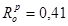 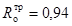
- по рис. 1: внутренняя поверхность левого верхнего угла примыкания наружной стены к перегородке и панели покрытия
а) поверхность
стены ниже кондиционера (от точки « 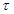 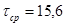
б) поверхность
горизонтального стыка (выше кондиционера район точек «Е» и «F»)
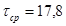
в) поверхность
потолка вне зоны влияния стыков, район точки «D» 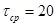
- по рис. 2: внутренняя поверхность угла сопряжения наружных стен и плиты покрытия
tв = 25,6°С, °, Rо = 0,41.
Как видно, полученные результаты свидетельствуют о недостаточной теплоизоляции наружных стен.
|
Кондиционер (отключенный) |
А: 18.0 В: 17.2 D: 20.0 E: 17.4 F: 17.0 G: 19.2 H: 21.0 I: 15.5 J: 17.8 K: 20.4 |
Рис. 1
|
А: 16.0 В: 15.5 D: 15.1 E: 15.8 F: 16.6 G: 15.7 H: 17.1 I: 16.3 J: 15.4 K: 16.4 L: 16.0 M: 16.1 |
Рис. 2
Значения коэффициентов теплоотдачи (Вт/м×°С) поверхности наружной стеновой панели при различных температурах и скоростях омываемого воздушного потока
|
Средняя температура, °С |
Скорость воздушного потока, м/с |
||||||
|
0,1 |
0,5 |
1 |
1,5 |
2,0 |
3 |
4 |
|
|
- 20 |
3,84 |
5,84 |
7,89 |
9,74 |
11,46 |
14,67 |
17,66 |
|
- 15 |
4,04 |
6,10 |
8,21 |
10,11 |
11,84 |
15,19 |
18,27 |
|
- 10 |
4,27 |
6,39 |
8,56 |
10,51 |
12,33 |
15,73 |
18,91 |
|
- 5 |
4,46 |
6,56 |
8,71 |
10,64 |
12,44 |
15,81 |
18,95 |
|
0 |
4,66 |
6,74 |
8,87 |
10,78 |
12,57 |
15,91 |
19,02 |
|
5 |
4,86 |
6,92 |
9,02 |
10,91 |
12,68 |
15,97 |
19,05 |
|
10 |
5,08 |
7,11 |
9,21 |
11,07 |
12,81 |
16,07 |
19,11 |
|
15 |
5,31 |
7,32 |
9,38 |
11,23 |
12,97 |
16,19 |
19,21 |
|
20 |
5,54 |
7,54 |
9,58 |
11,42 |
13,13 |
16,33 |
19,32 |
|
25 |
5,78 |
7,76 |
9,78 |
11,6 |
13,31 |
16,48 |
19,44 |
Примечание. Средняя температура определяется как средняя величина между температурой воздуха и температурой поверхности панели.